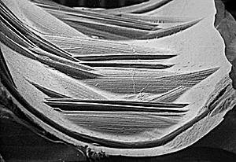

|
Small handheld files were used
to engrave parts of the carvings throughout the history of
seal making, although the period between 1750 BC and 1300
BC saw most activity.

The design of the kneeling figure is made
up of simple straight lines. These lines were made using small
files. The image on the right shows the filed lines from the
side.
|